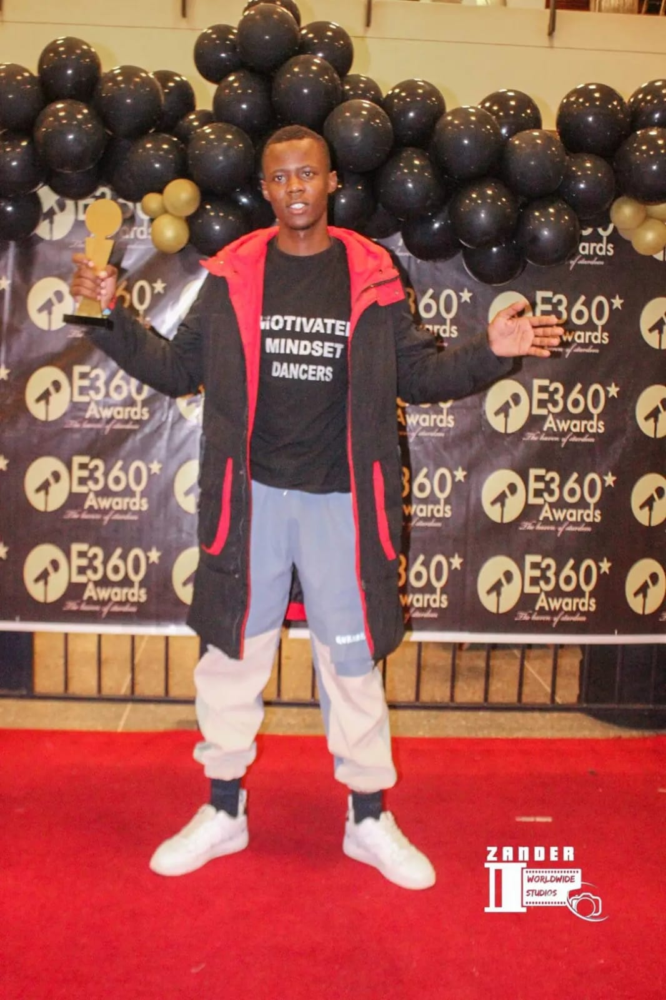
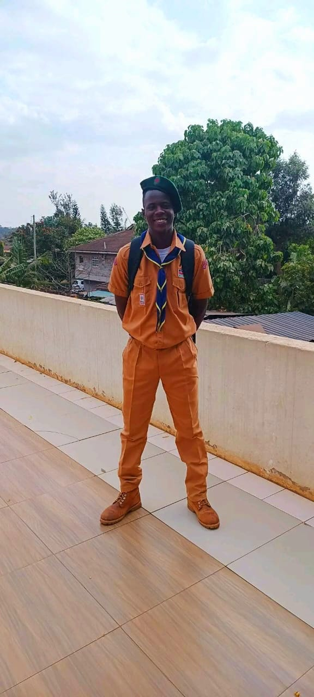
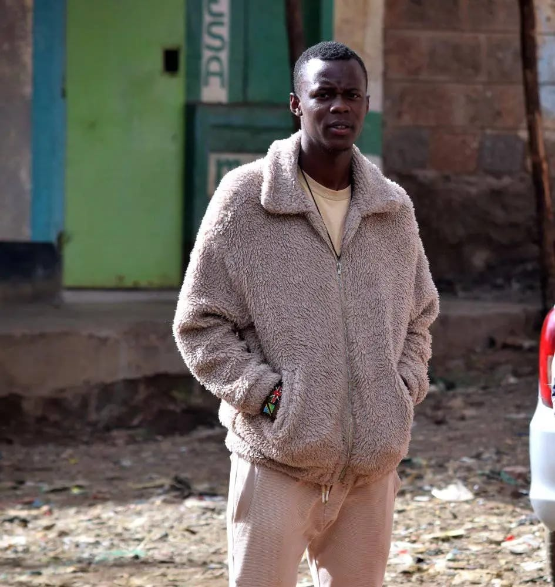
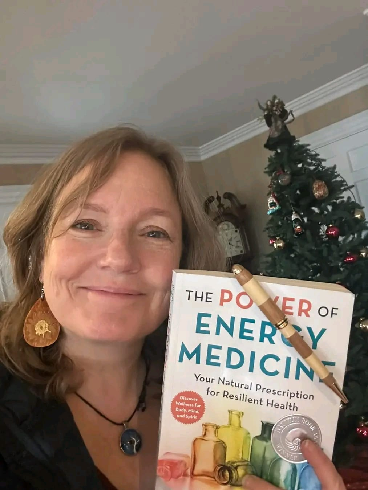
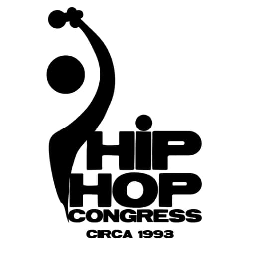

Early Life & Displacement
My name is Brian Otieno Owino. I was born in Siaya County, Kenya, but poverty forced my parents
to abandon everything familiar in search of survival.
I was only three years old when we arrived in Mathare Slum—a place where hope struggles to breathe
and childhood ends far too early.
My father was a mechanic who worked until exhaustion, yet earned too little to send me to school.
While other children carried books, I carried sacks of plastic and scrap metal. Hunger raised me.
Tomorrow was never guaranteed.
A Life-Changing Act of Kindness
Then—against all odds—someone saw me.
Mrs. Paul Katherine Trepinski from the United States chose to believe in a street child from Mathare.
She paid my school fees from Grade 1 through university and restored dignity when the world had taken it away.
In 2015, during my final high school examinations, she passed away. Though she was gone,
her love remained—my university education was fully funded through her will.
Community, Sport & Belonging
Through the vision of the late Bob Munro, I was supported by the Mathare Youth Sports Association (MYSA).
MYSA gave me school fees, books, and access to libraries—but more importantly, it gave me belonging.
Football became my escape from poverty. Through sport, leadership, and dance,
I earned scholarships that supported both me and my younger brother.
Education & Service
Despite everything, I fought for education—studying ICT at Nairobi Polytechnic,
Leadership at Born to Lead Academy, and Mindset Education at Mahanaim International School.
For six years, I volunteered with the Kenya Scouts Association and later served as a youth mobilizer
with Slumcode Group Organization, training children daily—free of charge.
Giving Back During Crisis
During the COVID-19 pandemic, I used my ICT skills to support Blossoms Children Education Center
by building their digital presence so they could survive.
During this time, Hilary Crowley believed in my work and supported Motivated Mindset Dancers Studio.
Even when funding ended, grace carried us forward.
Motivated Mindset Dancers Studio
Today, I run Motivated Mindset Dancers Studio—a safe space for children who are hungry,
angry, and forgotten.
Through dance, we offer discipline instead of drugs, hope instead of crime,
and purpose instead of despair.
Our Current Reality
Today, we are struggling. Studio rent is overdue. Bills are piling up.
Calls go unanswered. Messages are left on read.
Some nights, I sit alone in the studio and cry—not for myself,
but for the children who call this place home.



I am living evidence that hope works.
Please… help us pass it on.
Funding History
Motivated Mindset Dancers Studio has previously relied on support from key sponsors to sustain its programs and community activities. Our main sponsor in past years was Hilary Crowley, alongside support from the Hip Hop Congress National Organization. However, due to the recent discontinuation of funding for programs in Africa, this support has come to an end. As a result, the studio is currently facing significant financial challenges and is struggling to sustain its operations due to a lack of funding.

